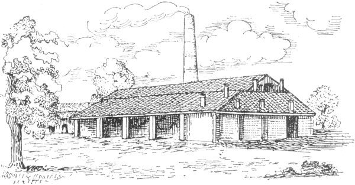

AFC descrizione
L’Antica Fornace Carraro rappresenta un autentico baluardo dell’artigianato piovese, continuando a produrre ininterrottamente dall’Ottocento cotto di altissima qualità. La realizzazione avviene tuttora secondo le antiche tecniche produttive, utilizzando solamente argilla locale e rispettando i lenti ritmi produttivi. Le argille utilizzate vengono raccolte nei territori circostanti e i mattoni prodotti sono sottoposti ad essiccazione per tutta l’estate nelle aie all’aperto. In autunno invece, i mattoni vengono cotti nell’antico forno Hoffmann ottocentesco, autentico fulcro del complesso. Il prodotto finale si distingue nel mondo per la sua indiscussa qualità, mantenendo così vivi i saperi secolari della produzione di laterizi.
Third section